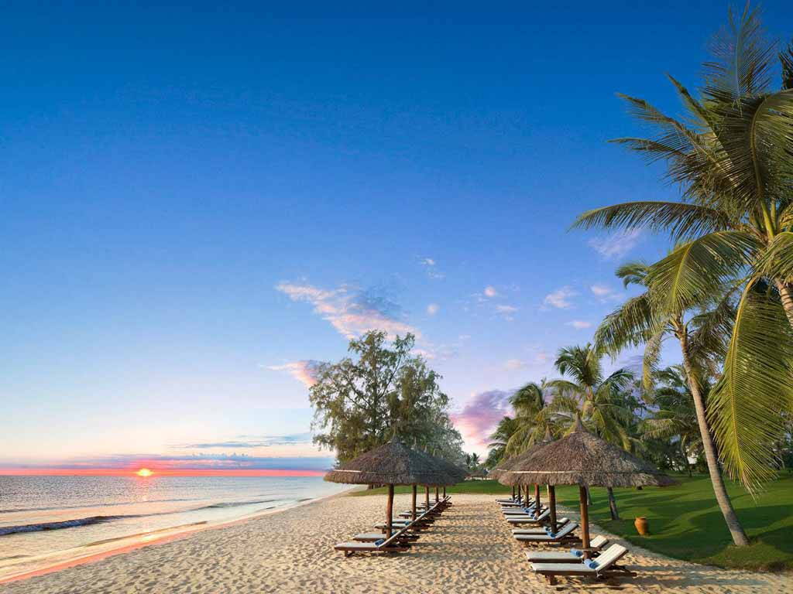
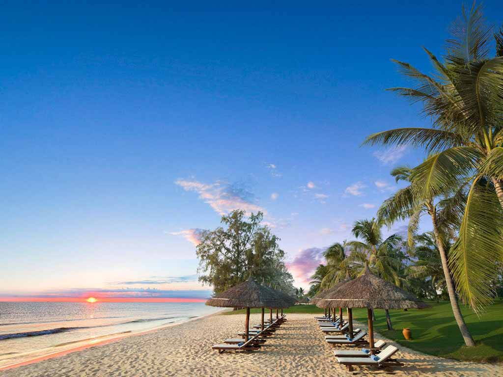

Du lịch Phú Quốc
Khám phá vẻ đẹp Phú Quốc – Đảo ngọc của Việt Nam
Khám phá vẻ đẹp Phú Quốc – Đảo ngọc của Việt Nam
Không phải không có lý do mà Phú Quốc được ưu ái gọi tên là Đảo ngọc. Hòn đảo xinh đẹp nằm trong vịnh Thái Lan, thuộc tỉnh Kiên Giang này hiện là hòn đảo du lịch lớn nhất Việt Nam. Đảo ngọc Phú Quốc đem đến cho du khách một sức hấp dẫn kì lạ, một thiên đường rực nắng xen giữa những hàng cây nhiệt đới xanh mát.
Bãi Dài có đường bờ biển trải dài từ mũi Gành Dầu đến Cửa Cạn, được nhiều tờ báo nước ngoài uy tín bầu chọn là một trong những bãi biển hoang sơ đẹp nhất thế giới, nhờ khung cảnh như thiên đường với nắng vàng, cát trắng, biển trong xanh, tươi mát. Khu vịnh bao bọc xung quanh khiến nơi đây luôn êm đềm, vắng lặng, rất lý tưởng để nghỉ ngơi, thư giãn.
 

Đảo ngọc Phú Quốc được đánh giá là hòn đảo thu hút đông khách du lịch nhất Việt Nam, với hàng triệu lượt khách du lịch mỗi năm, có không ít du khách trở lại đây hơn hai lần vì lỡ “phải lòng” hòn đảo thiên đường này. Sau những ngày học tập và lao động căng thẳng, một chuyến du lịch Phú Quốc ngắn ngày chính là lúc bạn lấy lại tinh thần, giải tỏa mệt mỏi. Phú Quốc cũng là địa điểm lý tưởng dành cho các cặp đôi trong tuần trăng mật và nhiều gia đình lựa chọn nơi đây cho chuyến đi nghỉ dưỡng của họ.
Mùa du lịch cao điểm Phú Quốc đang tới. Những bãi biển hình cánh cung mềm mại với bờ cát trắng mịn như kem trên đảo Phú Quốc nổi bật trên nền xanh của rừng già, cùng với làn nước trong veo màu ngọc bích đã giúp hòn đảo lớn nhất Việt Nam lọt vào mắt xanh của các du khách sành sỏi.
Phú Quốc được thiên nhiên ưu ái ban tặng cảnh sắc hài hòa, khí hậu dễ chịu quanh năm. Bãi cát màu kem mịn trải dài, nước biển trong xanh, êm ả, những hàng dừa cao vút… là những “đặc sản” đẹp khó cưỡng nơi đây. Không chỉ có thiên nhiên hoang sơ, kì bí, cuộc sống tươi vui nơi làng chài của những người dân biển bình dị cũng đem đến cho khách du lịch những trải nghiệm thú vị.

Ngoài ra, thiên nhiên còn dành tặng cho Phú Quốc rất nhiều loại hải sản hảo hạng, tươi ngon nổi tiếng, sẽ làm hài lòng cả những thực khách khó tính nhất. Nếu có dịp ghé thăm, nhất định phải thử những món đặc sản biển cả như hải sâm, nấm tram, ghẹ Hàm Ninh, gỏi cá trích... Tại đây có rất nhiều nhà hàng phục vụ hải sản đã chế biến và chưa chế biến với giá tốt. Du khách cũng có thể tự mua tại khu cảng cá hay khu chợ địa phương để tự chế biến hoặc làm quà cho người thân.
Đến với Phú Quốc, du khách có thể tận hưởng kỳ nghỉ dưỡng yên bình,khám phá thiên nhiên hoang sơ và cảm nhận nét đẹp văn hóa biển đảo. Trang web này sẽ giúp bạn tìm hiểu rõ hơn về Phú Quốc qua các mục Giới thiệu, Ẩm thực và Địa điểm nổi bật.